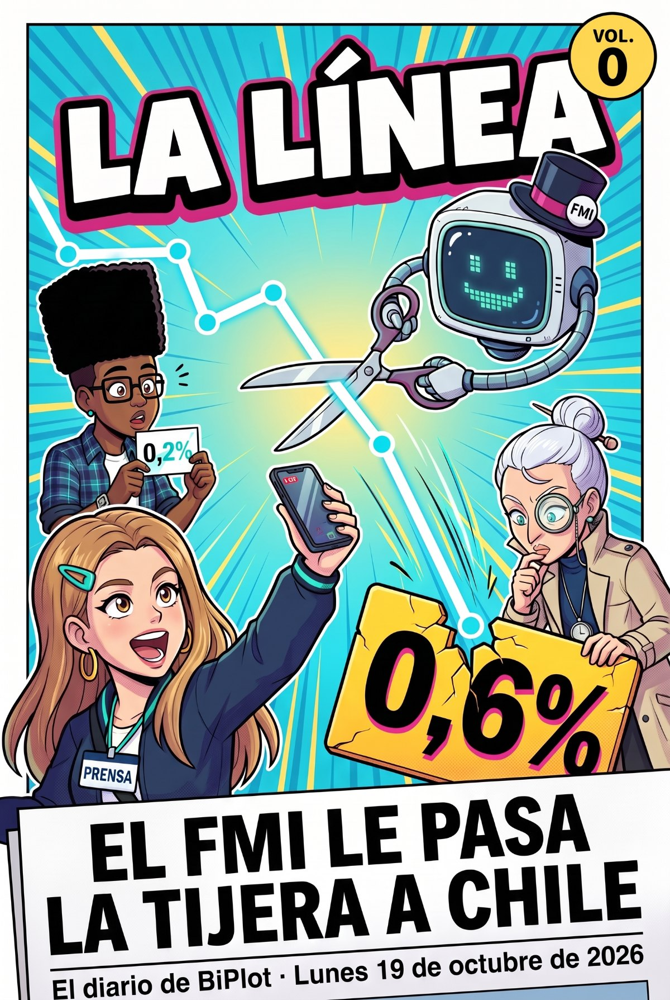
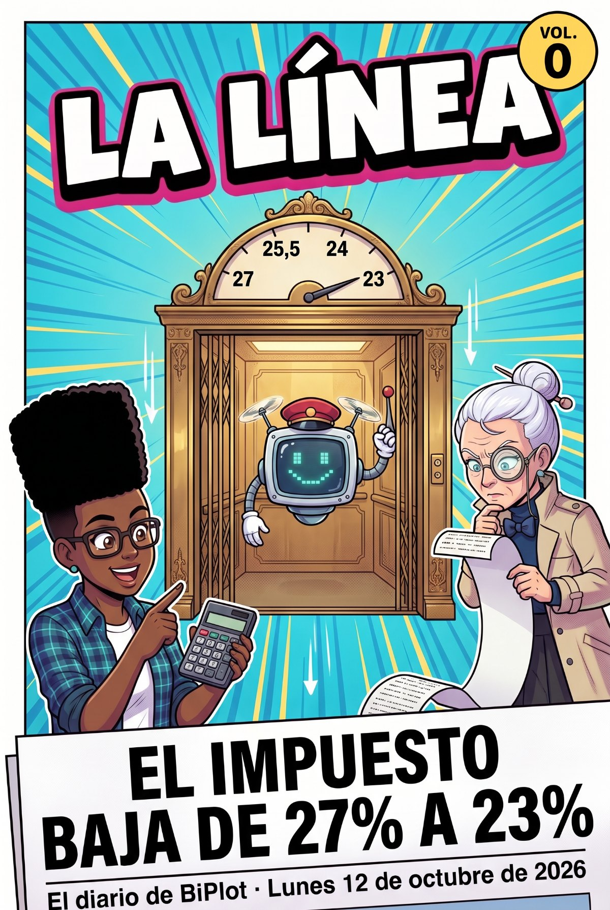

Saltar al contenido
Capítulo ·La hemeroteca: todos los tomos, el más nuevo primero

Vol. 0lunes 19 de octubre de 2026PruebaEl FMI recorta a 0,6% el crecimiento de Chile para 2026
Vol. 0lunes 12 de octubre de 2026PruebaKast promulga la Ley de Reconstrucción: el impuesto a las empresas bajará de 27% a 23%